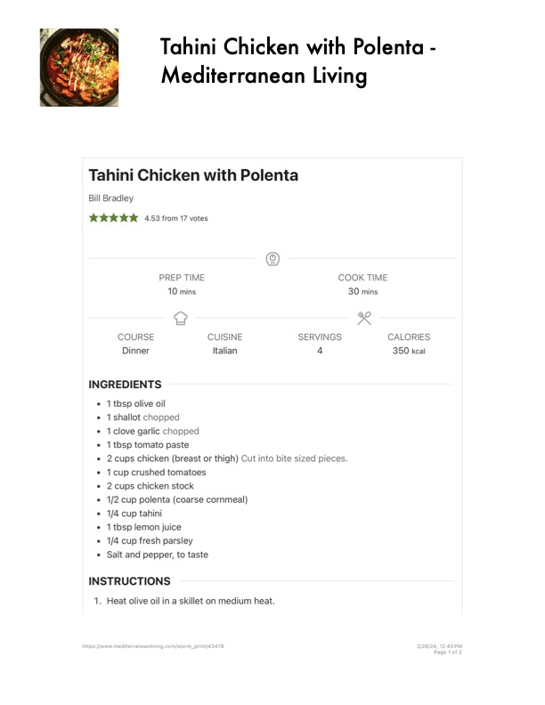

Tahini Chicken with Polenta -

Original cookbook page 541
Ingredients
- 1tbsp olive oil
- 1shallot chopped
- 1clove garlic chopped
- 1tbsp tomato paste
- 30 mins
- 2cups chicken (breast or thigh) Cut into bite sized pieces
- 1cup crushed tomatoes
- 2cups chicken stock
- 1/2 cup polenta (coarse cornmeal)
- 1/4 cup tahini
- 1tbsp lemon juice
- 1/4 cup fresh parsley
- Salt and pepper, to taste
Instructions
- Heat olive oil in a skillet on medium heat.
- Add shallot and garlic, cook until softened.
- Stir in tomato paste and cook for 1 minute.
- Add chicken pieces and cook until browned on all sides.
- Add crushed tomatoes and chicken stock. Bring to a simmer.
- Meanwhile, cook polenta according to package directions.
- Stir tahini and lemon juice into the chicken mixture.
- Serve chicken over polenta, garnished with fresh parsley.
Recipe #541 from collection